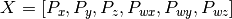
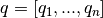
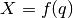
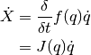
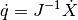
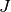
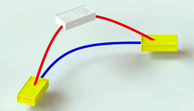

Cartesian control¶
NAOqi Motion - Overview | API | Tutorial
What it does¶
These APIs are dedicated to control directly the Effectors of the robot in a Cartesian space using an inverse kinematics solver.
Each Effector can be controlled individually, or in parallel with other.
- There are two kinds of inverse kinematics (IK) solver in ALMotion module:
- a classical IK solver which uses only the joints of the effector chain to reach a target.
- a generalized IK solver (also called Whole Body control) which uses all the robot joints to reach a target.
- There are two ways of controlling an effector:
- animation methods (time fixed, blocking function):
- reactive methods (could be changed every ALMotion cycle, non blocking function):
There are also some whole Body user friendly function (balance control, safe Cartesian command and so on).
The details of these functions are in Whole Body control section.
How it works¶
The geometric model of the robot gives the effector positions () relative to an absolute space in function of all the joint positions ().

The direct cinematic model is the derivative of the above equation with respect to time.

where  is also called the Jacobian matrix.
is also called the Jacobian matrix.
In our case, we want to control an effector and deduce the joint position. So, we look at the inverse kinematic model:

In many cases,  is not invertible directly (matrix not square), in our case we use the Moore-Penrose pseudoinverse to solve mathematically this problem.
Note
The classical IK solver due to robot singularity configuration could create huge joint velocity and the robot could lose balance and fall.
For this reason, all Cartesian motions should be tested in a simulator before being tried on the robot.
Limitations and performances¶
 Pepper¶
Pepper¶
Most of the methods are unusable for Pepper.
Still available methods:
Do not use:
ALMotionProxy::positionInterpolationALMotionProxy::positionInterpolationsALMotionProxy::setPositionALMotionProxy::setPositionsALMotionProxy::changePositionALMotionProxy::transformInterpolationALMotionProxy::transformInterpolationsALMotionProxy::setTransformALMotionProxy::setTransformsALMotionProxy::changeTransform
Getting started¶
Essential information to deal with Cartesian control:
Position and orientation¶
Position and orientation of a part of the robot are controlled using two different systems:
- Position6D and
- Transform.
Definitions and calculation rules are available in the ALMath library: libalmath Overview.
Effectors¶
An Effector is a predefined 3D point in the robot and it’s generally the end of a chain.
We choose these points because with a biped robot, we want for example:
- control the hand in order to catch an object or
- control the foot to kick in a ball.
For further details, see: NAO’s Effectors.
Frames¶
When creating a command for a robot, much attention needs to be placed on the space used to define the command, as a mistake in space could lead to disastrous results.
- FRAME_TORSO: this is attached to the robot’s torso reference, so moves with the robot as he walks and changes orientation as he leans. This space is useful when you have very local tasks, that make sense in the orientation of the torso frame.
- FRAME_ROBOT: this is average of the two feet positions projected around a vertical z axis. This space is useful, because the x axis is always forwards, so provides a natural ego-centric reference.
- FRAME_WORLD: this is a fixed origin that is never altered. It is left behind when the robot walks, and will be different in z rotation after the robot has turned. This space is useful for calculations which require an external, absolute frame of reference.
{kind=link}
{kind=link}
When executing a task, the space is determined when the task begins, and remains constant throughout the rest of the interpolation. i.e. the interpolation, once defined, will not change as the reference changes due to the legs moving or the torso orientation changing.
Axis Masks¶
When controlling the robot’s arms, he does not have enough degrees of freedom to be able to realize a task that has six constraints.
Using an Axis Mask, you can define which axis you wish to control. The axis mask is passed as a single parameter (an int) which can be calculated using the definitions below:
#define AXIS_MASK_X 1
#define AXIS_MASK_Y 2
#define AXIS_MASK_Z 4
#define AXIS_MASK_WX 8
#define AXIS_MASK_WY 16
#define AXIS_MASK_WZ 32
import almath
#An Axis Mask for Position only: 7
axisMask = almath.AXIS_MASK_X + almath.AXIS_MASK_Y + almath.AXIS_MASK_Z
The axis mask is executed in the same space used to define your task. It has the effect of liberating the constraint on each axis which is not part of the mask. Note carefully that a mask in space FRAME_WORLD is likely to be very different to one in space FRAME_TORSO.
Note
For the Torso, LLeg and RLeg effectors, the axes which are not part of the mask will have a fixed position. i.e. they will not move while performing the task.
For the Head, LArm and RArm effectors, the axes which are not part of the mask are not constrained. i.e. free to move in order to perform the task.
SE3 Interpolation¶
SE3 Interpolation is used for all interpolations that are defined in Cartesian Space. It provides a spline-like interpolation which allows for initial speeds and points of passage to be taken into account, ensuring smooth trajectories that respect speed constraints.
{kind=link}
Warning
If the desired motion is unfeasible, the robot can lose balance and fall. All Cartesian motions should be tested in a simulator before being tried on the robot.
Use Cases¶
Case 1: Arm trajectory¶
This example show a simple path composed of two control points, the target and the current position. It uses relative coordinates, so the current position is all zeros.
#! /usr/bin/env python
# -*- encoding: UTF-8 -*-
"""Example: Use transformInterpolations Method on Arm"""
import qi
import argparse
import sys
import motion
import almath
def main(session):
"""
Use case of transformInterpolations API.
"""
# Get the services ALMotion & ALRobotPosture.
motion_service = session.service("ALMotion")
posture_service = session.service("ALRobotPosture")
# Wake up robot
motion_service.wakeUp()
# Send robot to Stand Init
posture_service.goToPosture("StandInit", 0.5)
effector = "LArm"
frame = motion.FRAME_TORSO
axisMask = almath.AXIS_MASK_VEL # just control position
useSensorValues = False
path = []
currentTf = motion_service.getTransform(effector, frame, useSensorValues)
targetTf = almath.Transform(currentTf)
targetTf.r1_c4 += 0.03 # x
targetTf.r2_c4 += 0.03 # y
path.append(list(targetTf.toVector()))
path.append(currentTf)
# Go to the target and back again
times = [2.0, 4.0] # seconds
motion_service.transformInterpolations(effector, frame, path, axisMask, times)
# Go to rest position
motion_service.rest()
if __name__ == "__main__":
parser = argparse.ArgumentParser()
parser.add_argument("--ip", type=str, default="127.0.0.1",
help="Robot IP address. On robot or Local Naoqi: use '127.0.0.1'.")
parser.add_argument("--port", type=int, default=9559,
help="Naoqi port number")
args = parser.parse_args()
session = qi.Session()
try:
session.connect("tcp://" + args.ip + ":" + str(args.port))
except RuntimeError:
print ("Can't connect to Naoqi at ip \"" + args.ip + "\" on port " + str(args.port) +".\n"
"Please check your script arguments. Run with -h option for help.")
sys.exit(1)
main(session)
Case 2: Torso and Foot trajectories¶
This example shows how to do simultaneous trajectories of the Torso and the legs. The non-controlled right leg, will behave as if it received a zero relative command.
- Lower the Torso and move to a point above the Right Leg
- Move and turn the Left Foot outwards, with an upright intermediate position.
#! /usr/bin/env python
# -*- encoding: UTF-8 -*-
"""Example: Use transformInterpolations Method on Arm on Foot"""
import qi
import argparse
import sys
import almath
import motion
def main(session):
"""
Use transformInterpolations Method on Foot.
"""
# Get the services ALMotion & ALRobotPosture.
motion_service = session.service("ALMotion")
posture_service = session.service("ALRobotPosture")
# Wake up robot
motion_service.wakeUp()
# Send robot to Stand Init
posture_service.goToPosture("StandInit", 0.5)
frame = motion.FRAME_WORLD
axisMask = almath.AXIS_MASK_ALL # full control
useSensorValues = False
# Lower the Torso and move to the side
effector = "Torso"
initTf = almath.Transform(
motion_service.getTransform(effector, frame, useSensorValues))
deltaTf = almath.Transform(0.0, -0.06, -0.03) # x, y, z
targetTf = initTf*deltaTf
path = list(targetTf.toVector())
times = 2.0 # seconds
motion_service.transformInterpolations(effector, frame, path, axisMask, times)
# LLeg motion
effector = "LLeg"
initTf = almath.Transform()
try:
initTf = almath.Transform(motion_service.getTransform(effector, frame, useSensorValues))
except Exception, errorMsg:
print str(errorMsg)
print "This example is not allowed on this robot."
exit()
# rotation Z
deltaTf = almath.Transform(0.0, 0.04, 0.0)*almath.Transform().fromRotZ(45.0*almath.TO_RAD)
targetTf = initTf*deltaTf
path = list(targetTf.toVector())
times = 2.0 # seconds
motion_service.transformInterpolations(effector, frame, path, axisMask, times)
# Go to rest position
motion_service.rest()
if __name__ == "__main__":
parser = argparse.ArgumentParser()
parser.add_argument("--ip", type=str, default="127.0.0.1",
help="Robot IP address. On robot or Local Naoqi: use '127.0.0.1'.")
parser.add_argument("--port", type=int, default=9559,
help="Naoqi port number")
args = parser.parse_args()
session = qi.Session()
try:
session.connect("tcp://" + args.ip + ":" + str(args.port))
except RuntimeError:
print ("Can't connect to Naoqi at ip \"" + args.ip + "\" on port " + str(args.port) +".\n"
"Please check your script arguments. Run with -h option for help.")
sys.exit(1)
main(session)
Case 3: Multiple Effector Trajectories¶
The goal of this example is to simultaneously control three effectors: the Torso, the Left Arm and the Right Arm.
- Torso motion: non-blocking method;
- Right Arm motion: blocking method during the first half of torso motion;
- Left Arm motion: blocking method during the last half of the torso motion.
almotion_cartesianTorsoArm1.py
#! /usr/bin/env python
# -*- encoding: UTF-8 -*-
"""Example: Use transformInterpolations Method on Arm and Torso"""
import qi
import argparse
import sys
import almath
import motion
def main(session):
"""
Use transformInterpolations Method on Arm and Torso
"""
# Get the services ALMotion & ALRobotPosture.
motion_service = session.service("ALMotion")
posture_service = session.service("ALRobotPosture")
# Wake up robot
motion_service.wakeUp()
# Send robot to Stand Init
posture_service.goToPosture("StandInit", 0.5)
frame = motion.FRAME_WORLD
coef = 0.5 # motion speed
times = [coef, 2.0*coef, 3.0*coef, 4.0*coef]
useSensorValues = False
# Relative movement between current and desired positions
dy = +0.03 # translation axis Y (meters)
dz = -0.03 # translation axis Z (meters)
dwx = +8.0*almath.TO_RAD # rotation axis X (radians)
# Motion of Torso with _async process
effector = "Torso"
path = []
initTf = almath.Transform(motion_service.getTransform(effector, frame, useSensorValues))
# point 1
deltaTf = almath.Transform(0.0, -dy, dz)*almath.Transform().fromRotX(-dwx)
targetTf = initTf*deltaTf
path.append(list(targetTf.toVector()))
# point 2
path.append(list(initTf.toVector()))
# point 3
deltaTf = almath.Transform(0.0, dy, dz)*almath.Transform().fromRotX(dwx)
targetTf = initTf*deltaTf
path.append(list(targetTf.toVector()))
# point 4
path.append(list(initTf.toVector()))
axisMask = almath.AXIS_MASK_ALL # control all the effector axes
motion_service.transformInterpolations(effector, frame, path,
axisMask, times, _async=True)
# Motion of Arms with block process
frame = motion.FRAME_TORSO
axisMask = almath.AXIS_MASK_VEL # control just the position
times = [1.0*coef, 2.0*coef] # seconds
# Motion of Right Arm during the first half of the Torso motion
effector = "RArm"
path = []
currentTf = motion_service.getTransform(effector, frame, useSensorValues)
targetTf = almath.Transform(currentTf)
targetTf.r2_c4 -= 0.04 # y
path.append(list(targetTf.toVector()))
path.append(currentTf)
motion_service.transformInterpolations(effector, frame, path, axisMask, times)
# Motion of Left Arm during the last half of the Torso motion
effector = "LArm"
path = []
currentTf = motion_service.getTransform(effector, frame, useSensorValues)
targetTf = almath.Transform(currentTf)
targetTf.r2_c4 += 0.04 # y
path.append(list(targetTf.toVector()))
path.append(currentTf)
motion_service.transformInterpolations(effector, frame, path, axisMask, times)
# Go to rest position
motion_service.rest()
if __name__ == "__main__":
parser = argparse.ArgumentParser()
parser.add_argument("--ip", type=str, default="127.0.0.1",
help="Robot IP address. On robot or Local Naoqi: use '127.0.0.1'.")
parser.add_argument("--port", type=int, default=9559,
help="Naoqi port number")
args = parser.parse_args()
session = qi.Session()
try:
session.connect("tcp://" + args.ip + ":" + str(args.port))
except RuntimeError:
print ("Can't connect to Naoqi at ip \"" + args.ip + "\" on port " + str(args.port) +".\n"
"Please check your script arguments. Run with -h option for help.")
sys.exit(1)
main(session)
Case 4: Apply rotation¶
The goal of this example is to apply 15 degrees rotation around axis y to the Left Arm. In this case, it is difficult to compute the desired target as a position6D, from current position6D of LArm and rotation of 15 degrees around the Y axis. We cannot add 15 degrees to the wy component. In this general case, Transform is much simpler to use.
almotion_advancedCreateRotation.py
#! /usr/bin/env python
# -*- encoding: UTF-8 -*-
"""Example: Use setTransforms Method"""
import qi
import argparse
import sys
import almath
import motion
def main(session):
"""
This example uses the setTransforms method to create a rotation.
"""
# Get the services ALMotion & ALRobotPosture.
motion_service = session.service("ALMotion")
posture_service = session.service("ALRobotPosture")
# Wake up robot
motion_service.wakeUp()
# Send NAO to Pose Init
posture_service.goToPosture("StandInit", 0.5)
# Get transform of Left Arm in Torso frame
chainName = "LArm"
frame = motion.FRAME_TORSO
useSensor = False
tf = almath.Transform(motion_service.getTransform(chainName, frame, useSensor))
# Compute desired transform: rotation of -20 degrees around the Z axis
tfEnd = almath.Transform.fromRotZ(-20.0*almath.TO_RAD)*tf
tfEnd.r1_c4 = tf.r1_c4
tfEnd.r2_c4 = tf.r2_c4
tfEnd.r3_c4 = tf.r3_c4
# Set the desired target
axisMask = 63 # rotation
fractionMaxSpeed = 0.1
transform = [val for val in tfEnd.toVector()]
motion_service.setTransforms(chainName, frame, transform, fractionMaxSpeed, axisMask)
# Go to rest position
motion_service.rest()
if __name__ == "__main__":
parser = argparse.ArgumentParser()
parser.add_argument("--ip", type=str, default="127.0.0.1",
help="Robot IP address. On robot or Local Naoqi: use '127.0.0.1'.")
parser.add_argument("--port", type=int, default=9559,
help="Naoqi port number")
args = parser.parse_args()
session = qi.Session()
try:
session.connect("tcp://" + args.ip + ":" + str(args.port))
except RuntimeError:
print ("Can't connect to Naoqi at ip \"" + args.ip + "\" on port " + str(args.port) +".\n"
"Please check your script arguments. Run with -h option for help.")
sys.exit(1)
main(session)